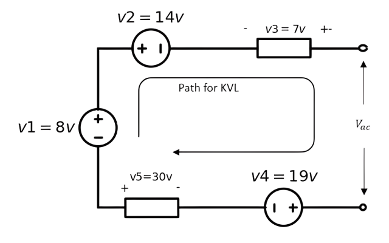

KVL & KCL#
Author : Kourosh Arfae Shahidi
Gmail : kourosh.a.shahidi@gmail.com
fall 2024
Introduction#
Kirchhoff’s Laws are two fundamental principles in electrical circuit analysis that help maintain the core physical concepts of conservation of charge and conservation of energy.
Kirchhoff’s Current Law (KCL):
This law states that the total current entering a junction (or node) in an electrical circuit must equal the total current leaving the junction. In other words, no current is lost or gained at a node. KCL is based on the principle of conservation of electric charge, ensuring that the total charge remains constant in the circuit.
Kirchhoff’s Voltage Law (KVL):
This law states that the sum of all electrical potential differences (voltages) around any closed loop in a circuit is equal to zero. This implies that the total energy provided by voltage sources in the loop is exactly balanced by the energy consumed by the resistive elements. KVL is based on the principle of conservation of energy, ensuring that energy is neither lost nor created within a closed loop.
Kirchhoff’s Current Law (KVL)#
Voltage#
voltage is a measure of potential energy difference across the element. This potential difference represents the work required to move charge through the element, and it’s measured in volts(V).
Conservation of Energy#
An electric field has the conservative property, namely the work in moving an electric charge around a closed path in the field is zero. In other words as moving around a closed loop, or circuit, you will end up back to where you started in the circuit and therefore back to the same initial potential with no loss of voltage around the loop.
Kirchhoff’s voltage law states the above property in terms of voltages in a circuit.
statement of KVL#
the algebraic sum of the voltages around a closed path in an electric circuit is zero.
The two key terms in the statement of KVL are closed path and algebraic sum of voltages.
Closed path#
A closed path in an electric circuit is any path that starts at some point in the circuit and returns to that point after traversing a number of components. a closed path can jump across several components or even across an open pair of terminals.
Algebraic sum of voltages#
Now, suppose a unit positive charge is moved clockwise around the closed path, When the charge is moved from the higher-potential terminal to the lower-potential terminal of a component (that is, from the reference positive to the reference negative terminal), it loses a potential energy equal to the voltage across the component.
On the other hand, when a unit positive charge is moved from the lower-potential terminal to the higher-potential terminal of a component (that is, from the reference negative to the reference positive terminal), it gains a potential energy equal to the voltage across the component.
The losses and gains in the potential energy of a unit charge moving across the components in a closed path must be subtracted and added, respectively, to determine the net change in its potential energy.
The resulting algebraic sum of the voltages in the closed path must be zero, since the work done in moving a charge through a closed path in an electric field is zero.
import schemdraw
import schemdraw.elements as elm
with schemdraw.Drawing() as d:
elm.style(elm.STYLE_IEC)
R1 = elm.Resistor().label(['+','$v1$','-'])
R2 = elm.Resistor().label(['-','$v2$','+'])
R3 = elm.Resistor().label(['-','$v3$','+']).down()
R4 = elm.Resistor().label(['+','$v4$','-'])
R5 = elm.Resistor().label(['-','$v5$','+']).left().tox(R1.start)
R6 = elm.Resistor().label(['+','$v6$','-']).to(R1.start)
elm.LoopCurrent([R1, R4, R5, R6], pad=1).label('$closed path$')
Writing KVL equation#
We can apply KVL to a circuit in several different ways. One method that leads to fewer equation-writing errors than others consists of moving mentally around the closed path in a clockwise direction and writing down directly the voltage of each element whose (+) terminal is entered, and writing down the negative of every voltage first met at the (−) sign.
If the direction of path is from plus to minus across a component, that voltage is added in the KVL equation.
If the direction of path is from minus to plus across a component, that voltage is subtracted in the KVL equation.
The algebraic sum of the voltages in a closed path, obtained by using the above convention, is then equated to zero.
For the closed path in figure above, the direction of the path is from + to - in v1 , v4 and v6, and from - to + in v2, v3 and v5. therefor , the kvl equation becomes :
v1 - v2 - v3 + v4 - v5 + v6 = 0
Example 1#
Choose three closed path in the circuit below and write the KVL equation for them
import schemdraw
import schemdraw.elements as elm
with schemdraw.Drawing() as d:
elm.style(elm.STYLE_IEC)
R1 = elm.Resistor().label(['+','$v1$','-'], fontsize=10).scaley(0.7).up().dot()
R2 = elm.Resistor().label(['-','$v2$','+'], fontsize=10).scaley(0.7).right().dot()
R4 = elm.Resistor().label(['+','$v4$','-'], fontsize=10).scaley(0.7).down()
R3 = elm.Resistor().label(['-','$v3$','+'], fontsize=10).scaley(0.7).left()
R5 = elm.Resistor().label(['-','$v5$','+'], fontsize=10).scaley(0.7).at(R4.end).right()
R6 = elm.Resistor().label(['-','$v6$','+'], fontsize=10).scaley(0.7).up().dot()
elm.Line().tox(R2.end)
# elm.Line().at(R1.end).up()
elm.Line().length(1.5).at(R1.end).up()
R7 = elm.Resistor().label(['-','$v7$','+'], fontsize=10).scaley(0.7).right()
R8 = elm.Resistor().label(['-','$v8$','+'], fontsize=10).scaley(0.7)
elm.Line().to(R6.end)
Solution of example one#
First, we select three closed circuits :
path 1 : v1 - v7 - v8 + v6 + v5 - v3 = 0
path 2 : v1 - v2 + v6 + v5 - v3 = 0
path 3 : -v2 + v8 + v7 = 0
Example 2#
Calculate the voltage v8 in the circuit of Figure below :
import schemdraw
import schemdraw.elements as elm
with schemdraw.Drawing() as d:
elm.style(elm.STYLE_IEC)
R1 = elm.Resistor().label(['-','$v1=100v$','+'], fontsize=10).scaley(0.7).scalex(1.2).up()
R2 = elm.Resistor().label(['-','$v2=50v$','+'], fontsize=10).scaley(0.7).scalex(1.2).right()
R3 = elm.Resistor().label(['-','$v3=50v$','+'], fontsize=10).scaley(0.7).scalex(1.2).down()
R4 = elm.Resistor().label(['+','$v4=200v$','-'], fontsize=10).scaley(0.7).scalex(1.2).left()
R5 = elm.Resistor().label(['-','$v5=100v$','+'], fontsize=10).scaley(0.7).scalex(1.2).at(R2.end).right()
R6 = elm.Resistor().label(['+','$v6=200v$','-'], fontsize=10).scaley(0.7).scalex(1.2)
R8 = elm.Resistor().label(['+','$v8$','-'], fontsize=10).scaley(0.7).scalex(1.2).down()
R7 = elm.Resistor().label(['-','$v7=50v$','+'], fontsize=10).scaley(0.7).scalex(1.2).left().to(R4.start)
Solution of example two#
Two closed paths are available for this calculation
first one:
The kvl equation of path1 is:
-v1 - v2 - v5 + v6 + v8 - v7 + v4 = 0
-100 -50 - 100 + 200 + v8 - 50 + 200 = 0
v8 = -100v
second one:
the kvl equation of path2 is:
v3 - v5 + v6 + v8 - v7 = 0
50 - 100 + 200 + v8 - 50 = 0
v8 = -100v
Example 3#
In the circuit shown in figure below evaluate the voltage marked Vx
import schemdraw
import schemdraw.elements as elm
with schemdraw.Drawing() as d:
elm.style(elm.STYLE_IEC)
v1 = elm.SourceV().label('$v1$').length(4)
r1 = elm.Resistor().label(['+','$v2$','-'], fontsize=10).scaley(0.7).right().dot()
r2 = elm.Resistor().label(['+','$v3$','-'], fontsize=10).length(2).scaley(0.7).down()
v2 = elm.SourceV().label('$v4$').length(2).scale(0.7).down().dot()
elm.Line().to(v1.start)
r3 = elm.Resistor().label(['+','$v5$','-'], fontsize=10).scaley(0.7).at(r1.end).right()
v3 = elm.SourceV().label('$v6$').scale(0.7).dot().right()
v4 = elm.SourceV().label('$v7$').toy(v1.start).scale(0.7).down()
r4 = elm.Resistor().label(['-','$v8$','+'], fontsize=10).length(5).scaley(0.7).left().dot()
elm.Line().to(v2.end)
v5 = elm.SourceV().label('$v9$').scale(0.7).at(r4.end).theta(38)
r5 = elm.Resistor().label(['+','$v10$','-'], fontsize=10).scaley(0.7).to(v3.end)
Solution of example three#
First, we consider the three closed paths: path 1, path 2 and path 3 . And then we write KVL equation for each one of them :
path 1:
-v1 + v2 + v3 - v4 = 0
path 2:
v4 - v3 + v5 - v6 - v7 - v8 = 0
path 3:
-v9 + v10 - v7 - v8 = 0
Does polarity of voltages matter?#
Since the actual polarities of voltages across the components in a circuit are not always known beforehand, they are usually assigned arbitrarily. If the assigned polarities match the actual polarities in a component, then the answer will be a positive voltage. If the assigned polarities do not match the actual polarities, then the answer will be a negative voltage, as in the preceding example. It is not necessary, however, to go back and reassign polarities in such cases; the answer is left as a negative value.
Open Circuit#
A pair of terminals is said to be open circuited when there is an open gap between them, which represents an infinite resistance. Current through an open-circuited pair of terminals is zero (except when an infinite voltage is applied across the terminals). The voltage across an open circuit is, in general, not zero.
Example 4#
Calculate the voltage across the open circuit in Figure below
import schemdraw
import schemdraw.elements as elm
with schemdraw.Drawing() as d:
elm.style(elm.STYLE_IEC)
v1 = elm.SourceV().label('$v1=8v$').scale(0.7)
v2 = elm.SourceV().label('$v2=14v$').reverse().length(2).scale(0.7).right()
r1 = elm.Resistor().label(['-','$v3=7v$','+'], fontsize=10).scaley(0.7).dot(open=True)
r2 = elm.Resistor().label(['+','\nv5=30v\n','-'], fontsize=10).length(2).scaley(0.7).at(v1.start)
v3 = elm.SourceV().label('$v4=19v$').scale(0.7).right().dot(open=True)
Solution of example four#
First, label the voltage across the open circuit as v and assign reference polarities (arbitrarily) as shown in Figure below. Next write a KVL equation around the closed path that includes the open circuit.

\(-v1 + v2 - v3 + v_{ac} + v4 - v5 = 0 \)
\(v_{ac} = 12v\)
Example 5#
Calculate the voltage across open circuit shown in figure below
import schemdraw
import schemdraw.elements as elm
with schemdraw.Drawing() as d:
elm.style(elm.STYLE_IEC)
v1 = elm.SourceV().label('v1=45v').scale(0.7)
r1 = elm.Resistor().label(['+','\nv2=15v\n','-'], fontsize=10).length(2).scaley(0.7).right()
elm.Dot(open=True).label(['+', ' V3'])
r3 = elm.Resistor().label(['+','\nv7=30v\n','-'], fontsize=10).scaley(0.7).at(v1.start).right()
v3 = elm.SourceV().label('v6=90v').scale(0.7).right().reverse()
r2 = elm.Resistor().label(['+','$v5=60v$','-'], fontsize=10, loc='bottom').scaley(0.7).up()
v2 = elm.SourceV().label('v4=75v').length(2).scale(0.7).left().reverse()
elm.Dot(open=True).label('-')
Solution of example five#
By writing the kvl equation clockwise, we can get the required voltage :
-v1 + v2 + v3 - v4 - v5 - v6 - v7 = 0
-45 + 15 + v3 - 75 - 60 - 90 - 30 = 0
v3 = 285v
Kirchhoff’s Current Law (KCL)#
Current#
The current present in a discrete path, such as a metallic wire, has both a numerical value and a direction associated with it; it is a measure of the rate at which charge flows through a circuit in a specified direction
Current is symbolized by I or i, and so
The charge transferred between time t0 and t may be expressed as a definite integral
Conservation of Charge#
The Conservation of Charge is a fundamental principle in physics and electrical engineering stating that the total electric charge in an isolated system remains constant over time. This law implies that charge can neither be created nor destroyed; it can only be transferred from one part of a system to another.
This law states that throughout any process occurring within a system, the algebraic sum of the electric charges within the system does not change . Since currents involve flow of changes , Kirchhoff’s current low restates the charge conservation principle in terms of currents in a circuit.
statement of KCL#
The algebraic sum of the currents at a node in an electric circuit is zero
in other words
The total current entering a circuits junction is exactly equal to the total current leaving the same junction
The key terms in the statement of KCL are node and algebraic sum of the currents
Node#
The terminals of a branch in a circuit are called nodes, as shown in Figure below, and KCL applies to any node in a circuit. When many branches meet at a common node, a single node is often shown spread out in order to avoid clutter in the circuit diagram.
Algebraic sum of the currents#
Consider the portion of a circuit shown in Figure below, with currents assigned to the branches, where some currents are entering and others are leaving the node. A distinction must be made between them by using appropriate algebraic signs and this leads to the “algebraic sum” referred to in the statement of KCL.
Writing KCL equation#
The following sign convention will be used in writing KCL equations.
A current leaving a node is written with a positive sign
A current entering a node is written with a negative sign
The algebraic sum of the currents at a node, obtained by using the above convention, is then equated to zero.
Example 6#
Write a KCL equation for each node in the circuit of Figure below
Solution of example six#
Node 1:
\(i_2 + i_1 + i_3 = 0\)
Node 2:
\(-i_1 + i_4 - i_5 = 0\)
Node 3:
\(i_5 - i_6 - i_3 = 0\)
Node 4:
\(-i_2 - i_4 + i_6 = 0\)
Example 7#
Calculate the current through the short circuit points A and B in the circuit of Figure below
import schemdraw
import schemdraw.elements as elm
with schemdraw.Drawing() as d:
elm.style(elm.STYLE_IEC)
elm.Line().length(2).right()
r1 = elm.Resistor().scalex(1.2)
elm.CurrentLabel(top=True, ofst=.4, length=2).at(r1).label('$i_1=7.5A$')
d1 = elm.Dot().label('A')
l1 = elm.Line().length(3).down()
elm.CurrentLabel(top=True, ofst=.4, length=1).at(l1).label('$i_{sc}$')
d2 = elm.Dot().label('B', loc='bottom')
r2 = elm.Resistor().length(4).scalex(1.2).right().dot()
elm.Line().length(1)
i1 = elm.SourceI().length(4).at(l1.end).left().dot()
elm.Line().length(1)
r3 = elm.Resistor().scalex(1.2).at(r1.end).to(i1.end)
elm.CurrentLabel(top=False, ofst=.4, length=1).at(r3).label('$i_4=16A$')
i2 = elm.SourceI().label('$i_3=2A$').endpoints(r1.end, r2.end).reverse()
r4 = elm.Resistor().length(4).scalex(1.2).at(r1.end).dot().right()
elm.CurrentLabel(top=True, ofst=.4, length=2).at(r4).label('$i_2=4A$')
elm.Line().length(1)
Solution of example seven#
The KCL equation at node A :
\(-i_1 - i_2 - i_3 + i_{sc} + i_4 = 0\)
Which leads to :
\(i_{sc} = -2.5 A\)
Determining the direction of currents#
Since the actual directions of currents in the branches of a circuit are not always known beforehand, they are usually assigned arbitrarily. If the assigned direction matches the actual direction in a branch, then the answer will be a positive current. If the assigned direction does not match the actual direction, then the answer will be a negative current, as in the previous example. It is not necessary, however, to go back and reassign current directions in such cases; the answer is left as a negative value.
Solving problems using KVL & KCL#
Example 8#
Determine \(v_x\) in the circuit of Figure below
Solution of example eight#
We begin by labeling voltages and currents on the rest of the elements in the circuit. Note that \(V_x\) appears across the \(2\Omega\) resistor and the source \(i_x\) as well.
If we can obtain the current through the \(2\Omega\) resistor, Ohm’s law will yield \(V_x\) . Writing the appropriate KCL equation, we see that :
\(i_2 = i_4 + i_x\)
Since we were given the current flowing from the 60 V source, perhaps we should consider starting from that side of the circuit. Instead of finding \(V_x\) using \(i_2\), it might be possible to find \(V_x\) directly using KVL. We can write the following KVL equations:
\(-60 + V_8 - V_{10} = 0\)
and
\(-V_{10} + V_4 + V_x = 0\)
We now have two equations in four unknowns. we can calculate that \(V_8 = 5 \times 8 = 40\Omega\) through Ohm’s law. Thus :
\(V_{10} = 0 + 60 - 40 = 20V\)
So we can calculate the \(V_x\) :
\(V_x = 20 - V_4\)
If we can determine v4, the problem is solved. The best route to finding a numerical value for the voltage \(V_4\) in this case is to employ Ohm’s law, which requires a value for \(i_4\). From KCL, we see that :
\(i_4 = 5 - i_{10} = 5 - \frac{V_{10}}{10} = 5 - \frac{20}{10} = 3\)
\(V_4 = 3 \times 4 = 12V\)
\(V_x = 20 - 12 = 8V\)
Example 9#
Find the current flowing in the 40Ω Resistor :
import schemdraw
from schemdraw import elements as elm
with schemdraw.Drawing() as d1:
elm.style(elm.STYLE_IEC)
b1 = elm.BatteryCell().label('$10V$').up().reverse()
r1 = elm.Resistor().label('$10\Omega$').right()
elm.Dot().label('A')
r2 = elm.Resistor().label('$20\Omega$')
elm.BatteryCell().label('$20V$',loc='bottom').down()
elm.Line().tox(b1.start)
r3 = elm.Resistor().label('$40\Omega$').at(r1.end).down()
<>:7: SyntaxWarning: invalid escape sequence '\O'
<>:9: SyntaxWarning: invalid escape sequence '\O'
<>:12: SyntaxWarning: invalid escape sequence '\O'
<>:7: SyntaxWarning: invalid escape sequence '\O'
<>:9: SyntaxWarning: invalid escape sequence '\O'
<>:12: SyntaxWarning: invalid escape sequence '\O'
C:\Users\Hadi\AppData\Local\Temp\ipykernel_10960\2948437889.py:7: SyntaxWarning: invalid escape sequence '\O'
r1 = elm.Resistor().label('$10\Omega$').right()
C:\Users\Hadi\AppData\Local\Temp\ipykernel_10960\2948437889.py:9: SyntaxWarning: invalid escape sequence '\O'
r2 = elm.Resistor().label('$20\Omega$')
C:\Users\Hadi\AppData\Local\Temp\ipykernel_10960\2948437889.py:12: SyntaxWarning: invalid escape sequence '\O'
r3 = elm.Resistor().label('$40\Omega$').at(r1.end).down()
Solution of example nine#
First, using kvl, we determine the branch current with the element, then we write the kvl equation by selecting the paths :
path 1 :
\(-10 + 40(I_s - i_1) - 10i_1 = 0\)
path 2 :
\(20 - 20I_s - 40(I_s - i_1) = 0\)
If we simplify the equations, we get two equations with two unknowns :
\(60I_s - 40i_1 = 20\)
\(40I_s + 30i_1 = 10\)
By solving the quadratic equation:
\(i_1 = \frac{1}{7}\) and \(I_s = \frac{3}{7}\)
\(I_s - i_1 = \frac{2}{7} = 0.285\)
Conclusion#
In this project, we first referred to the basic concepts of voltage and electric current in a circuit. Then, we discussed the laws of conservation of energy and electric charge, and realized that the work done in transferring an electric charge in a closed loop is zero, and the number of electric charges in a closed system always remains constant. After that, we introduced Kirchhoff’s laws, which are derived from the previous two laws, stating that the algebraic sum of voltages in a closed loop equals zero and the algebraic sum of currents at a junction equals zero too.
Finally, by understanding these two laws, we can easily analyze electrical circuits.
Sources#
https://www.electronics-tutorials.ws/dccircuits/kirchhoffs-current-law.html
https://www.electronics-tutorials.ws/dccircuits/kirchhoffs-voltage-law.html
ENGINEERING CIRCUIT ANALYSIS(William H. Hayt, Jr. (deceased))